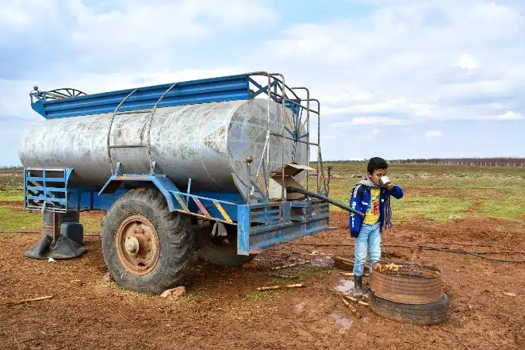

Um estudo conjunto das organizações aponta que a meta de alcançar acesso universal até 2030 ainda está distante de ser cumprida. Pelo contrário, o objetivo é "cada vez mais inalcançável", alertam. "Água, saneamento e higiene não são privilégios. São direitos humanos fundamentais", declarou Rüdiger Krech, diretor de Meio Ambiente e Mudança Climática na OMS. "Devemos acelerar nossas ações, em particular para as comunidades mais marginalizadas", acrescentou. Em 2024, apenas 89 países tinham um serviço básico de fornecimento de água potável, incluindo 31 que alcançaram o acesso universal a serviços administrados de forma segura. Por outro lado, 28 países onde uma em cada quatro pessoas ainda não tem acesso a serviços básicos se concentram principalmente na África.
Em 2022, 2,2 bilhões de pessoas não tinham acesso a água potável administrada de forma segura (Meta 6.1 dos ODS). Os avanços obtidos entre 2015 e 2022 limitaram-se principalmente às áreas urbanas, onde a prestação de serviços mal tem acompanhado o crescimento populacional. Também em 2022, quatro em cada cinco pessoas sem pelo menos serviços básicos de água potável viviam em áreas rurais. A situação quanto ao saneamento administrado com segurança continua grave, com 3,5 bilhões de pessoas sem acesso a esses serviços. Cidades e municípios, em particular, têm sido incapazes de acompanhar o crescimento acelerado de suas populações urbanas. De fato, “alcançar a cobertura universal até 2030 exigirá um aumento substancial das atuais taxas mundiais de progresso: seis vezes para água potável, cinco vezes para saneamento e três vezes para higiene”.

O relatório Progresso na Água Potável e Saneamento em Domicílios 2000-2024 revela dez fatos importantes:
- Apesar dos ganhos desde 2015, 1 em cada 4 – ou 2,1 bilhões de pessoas em todo o mundo – ainda não tem acesso a água potável manejada de forma segura, incluindo 106 milhões que bebem diretamente de fontes superficiais não tratadas.
- 3,4 bilhões de pessoas ainda carecem de saneamento manejado de forma segura, incluindo 354 milhões que praticam a defecação a céu aberto.
- 1,7 bilhão de pessoas ainda carecem de serviços básicos de higiene em casa, incluindo 611 milhões sem acesso a nenhum espaço de higiene.
- As pessoas nos países menos desenvolvidos têm duas vezes mais chances do que as pessoas em outros países de não ter água potável e serviços básicos de saneamento, e mais de três vezes mais chances de não ter higiene básica.
- Em contextos frágeis, a cobertura de água potável manejada de forma segura é 38 pontos percentuais menor do que em outros países, destacando desigualdades gritantes.
- Embora tenha havido melhorias para as pessoas que vivem em áreas rurais, elas ainda estão atrasadas. A cobertura de água potável manejada de forma segura aumentou de 50% para 60% entre 2015 e 2024, e a cobertura de higiene básica, de 52% para 71%. Em contraste, a cobertura de água potável e higiene nas áreas urbanas estagnou.
- Dados de 70 países mostram que, embora a maioria das mulheres e adolescentes tenha materiais menstruais e um local privado para se trocar, muitas não têm materiais suficientes para trocar com a frequência necessária.
- Meninas adolescentes de 15 a 19 anos são menos propensas do que as mulheres adultas a participar de atividades durante a menstruação, como escola, trabalho e passatempos sociais.
- Na maioria dos países com dados disponíveis, mulheres e meninas são as principais responsáveis pela coleta de água, com muitas na África Subsaariana e na Ásia Central e Meridional gastando mais de 30 minutos por dia coletando água.
- À medida que nos aproximamos dos últimos cinco anos do período dos Objetivos de Desenvolvimento Sustentável, alcançar as metas de 2030 para acabar com a defecação a céu aberto e o acesso universal a serviços básicos de água, saneamento e higiene exigirá aceleração, enquanto a cobertura universal de serviços gerenciados com segurança nessa área parece cada vez mais fora de alcance.
Programas de Acesso à Água Potável e Saneamento Básico
Os Programas de Acesso à Água Potável e Saneamento Básico são iniciativas governamentais e não governamentais que visam proporcionar o acesso a recursos hídricos seguros e a serviços de saneamento adequados como tratamento de água, coleta e tratamento de esgoto e disposição adequada de resíduos sólidos à população. Esses programas podem incluir a construção de sistemas de abastecimento de água, redes de esgoto, instalação de banheiros, capacitação da população e conscientização sobre práticas de higiene. Esses programas são de extrema importância para garantir a qualidade de vida das pessoas, promovendo a saúde, o bem-estar e o desenvolvimento sustentável de uma comunidade. No entanto, apesar dos esforços em implementar esses programas, ainda existem desafios a serem superados, especialmente no que diz respeito à desigualdade no acesso e à necessidade de melhorias contínuas.
Exemplos de Programas de Acesso à Água Potável e Saneamento Básico no Brasil
No Brasil, existem diversos exemplos de Programas de Acesso à Água Potável e Saneamento Básico. Um exemplo é o Programa Água para Todos, que visa levar água potável às comunidades rurais que ainda não têm acesso. Outro exemplo é o Programa de Aceleração do Crescimento (PAC), que inclui investimentos em infraestrutura de saneamento básico em áreas urbanas. Além disso, o Programa Nacional de Saneamento Rural (PNSR) tem o objetivo de promover o saneamento básico em áreas rurais.
Os 20 países com mais pessoas sem acesso a uma fonte de água potável segura
| País | Pessoas sem acesso a água potável segura | Parcela da população |
|---|---|---|
| Índia | 78.353.445 | 5,9% |
| China | 62.826.038 | 4,5% |
| Nigéria | 60.061.642 | 31,5% |
| Etiópia | 44.361.653 | 42,7% |
| RD Congo | 38.572.913 | 47,6% |
| Indonésia | 32.986.705 | 12,6% |
| Tanzânia | 23.097.307 | 44,4% |
| Bangladesh | 20.879.196 | 13,1% |
| Paquistão | 18.687.016 | 8,6% |
| Sudão | 17.810.872 | 44,5% |
| Quênia | 17.328.578 | 36,8% |
| Afeganistão | 15.126.182 | 44,7% |
| Angola | 14.360.477 | 51% |
| Moçambique | 12.981.173 | 48,9% |
| Madagascar | 12.331.950 | 48,5% |
| Mianmar | 9.916.386 | 19,4% |
| Filipinas | 8.635.665 | 8,2% |
| Níger | 8.334.710 | 41,8% |
| Uganda | 7.881.604 | 21% |
| Chade | 7.206.630 | 49,2% |